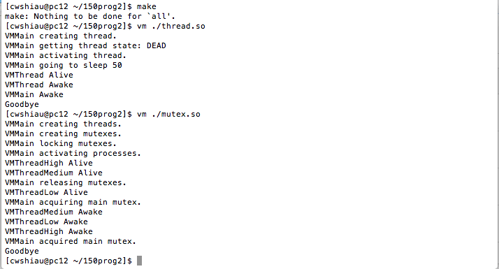
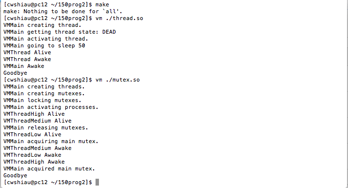
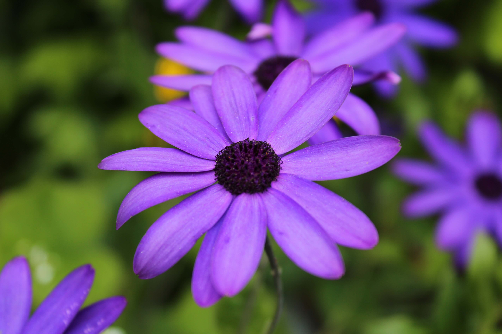
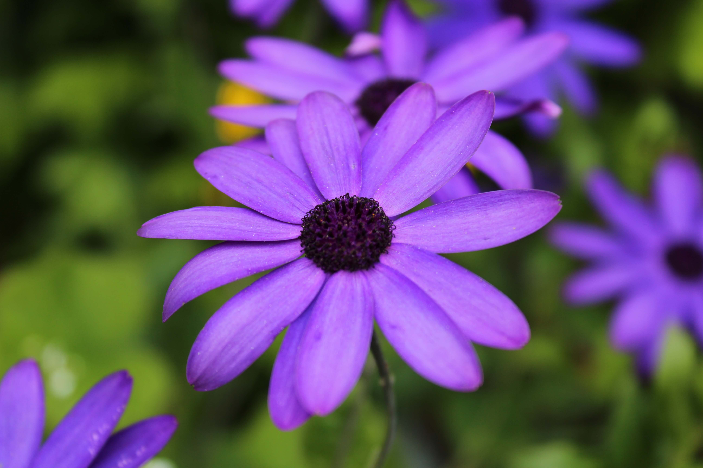

Hello!

Chloe Wynn Shiau
(noun): A passionate programmer with a hidden aspiration to own her own bakery.
I am currently a 4th year at UC Davis studying
Computer Science
with an intended minor in Asian American Studies. Starting August 2016, I will be working as an
Application Developer
at Adobe Systems.
When I am not coding, I enjoy baking sweets, cooking for friends + family, finding cute coffee shops to study, traveling, photography, and hunting for delicious foods wherever I go.


 



 
